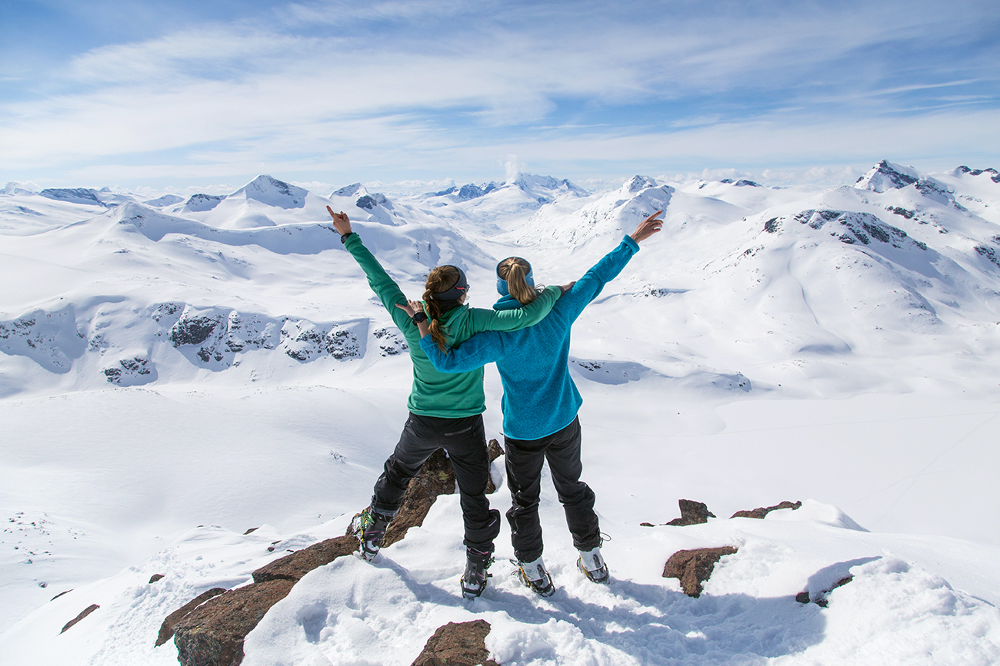
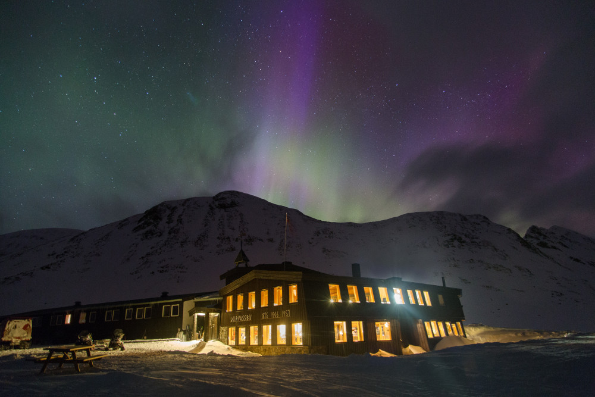

Jotunheimen
Gira på topptur? Gjer klar randoneeskia, splitboardet, fjellskia eller kva du måtte foretrekke og bli med til fjells! I Jotunheimen kan du gå alt frå korte dagsturar til den spektakulære Høgruta. Snakkast i fjellet!
Få nytt frå fjellet
Registrer deg og få rykande ferske vær – og førerapportar frå lokale fjellfolk.
Samarbeidspartnarer
Guidaturer
Bli med på randoneehelg, jentetur, innføringstur, snøtur eller gå Høgruta i Jotunheimen.

Turbeskrivingar
Ynskjer du å gå topptur på eiga hand? Her finn du detaljerte turbeskrivingar til nokre av dei mest populære toppane i Jotunheimen – som for eksempel Fanaråken, Galdhøpiggen, Glittertind, Storebjørn, Store Smørstabbtind og Loftet.
Overnattinger
Jotunheimen og omegn byr på eit rikt utval av overnattings- og serveringsstader. Her kan du velge mellom alt frå hotell og hytter sentralt i Lom til fjellstuer kor du kan spenne på deg skia rett utafor døra. Kultur og tradisjonell mat har stort fokus i området, så her er det høve for gode opplevelser også etter skituren.
Transport
Jotunheim området kan du nå med ekspressbuss frå Oslo, Bergen, og Trondheim dagleg.
Den enklaste måten å kome seg til og rundt omkring i området er å køyre bil. Fylg E6 frå Oslo/Lillehammer, eller E16 ved Lærdal frå Bergen
Tre av Norges nasjonale turistveger går gjennom Jotunheimen; Sognefjellsvegen, den gamle Strynefjellsvegen og Valdresflya. Ver oppmerksam på at nokre fjelloverganger er stengt vinterstid.
Trafikkmeldinger sjå Statens Vegvesen
Med bil frå Lom sentrum.:
Ver oppmerksam på at ikkje alle hyttene på høgfjellet kan nåast med bil vinterstid. Dei det gjeld tilbyr transport heilt inn. Ta kontakt i god tid.
Turane vi gjekk i 2016
Har du noen ubesvarte spørsmål, ta kontakt
med oss direkte. Vi hjelper deg gjerne med
tips som bidrar til at din tur blir uforglemmelig.
+47 61 21 29 90
info@visitjotunheimen.no
Sognefjellsvegen 17, Lom